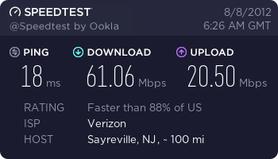

My steam downloads always seem to be very fast… 7-10Mbyte/s
I don’t know what kind of connection you have, but I aint calling that slow atleast 
Yeah, but like I said: grab torrent, play until BMS is on steam, uninstall, install in steam… updates and achievements from there on out. Pretty simple… and I am not a guy who sits around downloading movies, shows, games and warez on torrents… but I have grabbed a couple things here and there on bittorrent, and I have to say, I am very impressed by the power of torrents… this is clearly the fastest choice imho. I would not be at all surprised to see 2mb/sec of BMS download on my cable using torrent.
Edit: Hey Sweden, come on, you guys have the best internet infrastructure and service on the planet… I think bandwidth/person ratio of Sweden would probably smoke almost everyone else… so you should be excluded from our estimation of what downloads will be like. 
That’s insane… I have NEVER exceeded 2.x mbps 
Ya well, on that part I agree.
I wouldnt mind installing / reinstalling on steam.
Just said that steam really is capable of high speed downloads.
But like you said, torrent IS fast and if everybody seeds it will probably max out for us all.
And well, I guess we swedes are pretty spoiled with out great internet. I don’t understand how it can be so under dimensioned in the US. Or well, the area is much much bigger and to area comes great costs as well. Where can you find the high speed internet in the states? Only in bigger cities?
Myself, I wouldnt even consider moving to a place with less than 100Mbit/s both up- and download speed. Like I said, spoiled :fffuuu:
With mbps, do you mean Byte or Bit? 2MByte/s isnt that bad, is it? ~16Mbit/s which is about what most swedes have as well
If you mean Mbit - I feel sorry for you
7-10 of the same unit compared to 2 is insane…
Yeah 2MByte/s is what I get, usually. Unless it’s a steam sale, then I get 0.
Pretty sure he means MB/s. Who the heck measures in Mb/s?
I retract my prior statement about being willing to wait a day or two to be released on Steam. It actually does seem smarter to get it from the dev’s mirrors and then install on Steam when the time comes.
I think that broadband, for the most part, is pretty ubiquitous here in US… shit, even most farm folk have it… but I think that the powers-that-be, in countries like yours (sweden etc), are much, much more liberal and generous in their allocation of bandwidth to the masses. Here, you get what you pay for. With regular cable service, you can sometimes get up to 2MB/sec on a good day… if you want much more, you need to step up to business class cable, T1, OC3 etc… ouch!! none of which are cheap.
I don’t know why, but I always get insanely good dl speeds through steam. On top of that, I swear it caused a loophole in the speed limit our isp imposes: once I was downloading a torrent, and had it on pause… I started downloading a game on steam, and it was going fast; like 5 mbps (crazy for where I live and the speed we are usually provided with), and I noticed the torrent was downloading again, at insane speeds as well…
For the record, our isp provides us with a measly 10 mbits/s, that’s what makes this incredible for us.
Man… Ive never seen more than 250 kbps… lucky bastards
@Madcat1030: was the download speed consistent? Because otherwise it’s just a measurment error. Steam always had wrong speeds shown and I also get too high speeds when I resume a download.
Tell me about that. Every time Dota 2 had an update, the download speed would be so damn fast that I couldn’t even open Google without it taking almost 5 minutes to open…
Running on 300kb/s like 90% of Montreal, my internet is plenty fast enough for everything I need, except for downloading Black Mesa.
Yeah, Steams download system is the worst I’ve seen. It does not react dynamically to the network load and so just goes “fuck you” and eats all the bandwidth away.
Yes, Steam is very much capable of some serious fucking download speeds… when all the pieces are in place, and all the right boxes ticked… as I stated on another thread, when they had some of the ridiculous deals during the Summer Sale on Steam, I was only able to log in, (one login error after another… for almost an hour straight) with only 2 minutes to spare, to grab Rage at whatever crazy price that went for. So since these are very extraordinary circumstances we are talking about (release of BMS, at a very specific moment in time), everyone’s best bet will be using torrent imho. If you don’t have a torrent app and/or know how to use one, it is quick and painless and takes mere minutes to master. You have plenty of time to install, practice and be ready for next Friday. You do not even need to download anything illegally… there is plenty of free and uncopyrighted shit you can grab with torrents for testing etc.
I have to agree that Steam downloads are WAAAAYYYYYYY slower than torrents. Downloading from any single server is always slower than getting something from a ton of sources at once. If the seeds are there, the speeds can be insane!  Also, there is no need to defend your torrenting as someone did before. It has the reputation of being used for piracy, but it has plenty of legitimate uses as well… this being one of them!
Also, there is no need to defend your torrenting as someone did before. It has the reputation of being used for piracy, but it has plenty of legitimate uses as well… this being one of them!
If you guys really want to compare speeds, just go to https://www.speedtest.net and post your results!
This is what I’m rockin… Fiber!

Here I am:
You bastard!!!.. you have business class?.. what gives?.. you’re at work, aren’t you?
Have you guys heard about Google Fiber, Google’s new internet service? You get 1 Gigabit(125 MBs) up and download speeds for $70 a month. Too bad it’s going to be a while until it spreads around. But damn, mind blowing speed right there.
I’m jealous…Of unhingedmouse’s speedtest
With torrents, are the first people who grab it going to get slow rates because I can’t imagine many seeds?
I really don’t know anything about torrents but I’ve always been under the assumption that download rates are a result of how many people seed it. If it is a new release will there be any seeds?
For anyone who’s wondering: I have moved the discussion about Steam download speeds from the “Steam on Greenlight” thread to this seperate one. Please try to keep things on-topic.